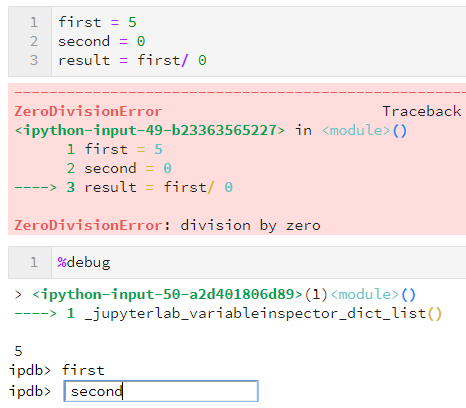
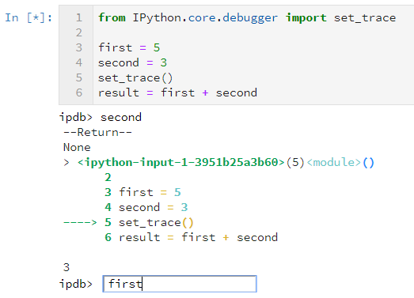

Help for Jupyter and Python
Read the following sections carefully before you start working on the notebooks.
The first part of this notebook provides an explanation of the fundamental steps for installing your Python distributor, configuring your Python environment, and using basic Python commands. It will also give you important information on how to debug your code in case something does not work as expected. The second part describes the general setup of all notebooks, teaches you how to work with Jupyter and how to quickly and efficiently solve problems while doing the exercises.
Contents:
Python programming skills
1.1 Python installation and configuration
1.2 Using Python terminal, setting up a Python environment
1.3 Implementation of basic engineering and mathematical techniques
1.4 How to efficiently search for solutions to Python errors
Jupyter notebook workflow
2.1 General information about notebooks
2.2 User interface and useful commands in Jupyter notebooks
2.3 Debugging and editing your Python code directly in Jupyter notebook
1 Python programming skills
In this course, we will be working with Anaconda (a Python distribution platform). The following instructions give an overview of essential steps prior to using Jupyter notebooks on Windows.
1.1 Python installation and configuration
Here is how to install your Python distribution platform:
Download and install Anaconda (it automatically comes with the latest Python version)
Follow the instructions in the dialog window. Make sure to check the box Add Anaconda to my PATH environment variable in order to be able to use Jupyter notebooks.
Installation will follow
To check whether the path to Anaconda has been added to your environment variables, go to Edit the system environment variables in the start menu, and click the Environment Variables button in the dialogue window.
1.2 Using Python terminal, setting up a Python environment
To progress efficiently in this course, you will need to install additional Python packages that are not included in the basic Anaconda Python distribution. It is recommended to install these packages in a dedicated Python environment. A Conda environment is a directory in which you can install files and packages such that their dependencies will not interact with other environments, which is very useful if you develop code for different courses or research projects. These packages can either be
installed using a conda .yml file or manually using the conda and/or pip package managers. To run the complete development environment for this course, you need to install six additional Python packages: jupyter, matplotlib, numpy, scikit-learn, scipy and spyder (spyder is optional).
Open the Anaconda terminal from the Start menu on Windows
Create a
condaenvironment: In (Anaconda) command prompt, writeconda create --name myenv(to create an environment with a specific Python version, specify the version at the end of this command linepython=3.13; and to add specific packages to the environment, specify them afterwards in the same command line, e.g.conda create -n myenv python=3.13 scipy=0.15.0 numpy nibabel). Check the requirements file for the package versions you need to install.
Here is an example you can follow for this course:
conda create --name 8be030 python=3.13 # create a new environment called `8be030`
conda activate 8be030 # activate this environment
pip install matplotlib jupyter numpy scikit-learn scipy # install the required packages
Using both ways, the default destination folder for your newly created Python environment will be in C:\path-to-anaconda\envs\myenv. Note! You have to activate the 8be030 environment every time you start working on the assignments (conda activate 8be030).
1.3 Implementation of basic engineering and mathematical techniques
Best way to learn the basics of programming is to study Python essentials in the Essential Skills notebook of the course. Additionally, a comprehensive reference book with examples on applying mathematical models as well as machine learning in Python can be found in the book Python for Science and Engineering by Hans-Peter Halvorsen.
1.4 How to efficiently search for solutions to Python errors
Code bugs, glitches and unexpected behavior occur frequently whenever you develop code snippets, test your implementation or integrate your solution into someone else’s code. What is usually time-consuming and demotivating for students, is searching for solutions to Python errors that may show an utterly confusing explanation on the screen. You copy the error text, open your browser, paste it, and a long list of sometimes completely unrelated solutions is thrown in front of you. Yes, this can be very frustrating.
The good news is that errors in Python have a very specific form, called a traceback. Though intimidating at times, tracebacks inform you broadly about what went wrong in your program, including indication of the line of code where the error ocurred and what type of error it was. Tracebacks may have multiple levels (reaching up to 20 levels deep!), which results in long error messages. Note however, that the length of these error statements does not reflect the severity of the problem as the messages contain all functions that were called upon before the error was encountered. You will typically find the error at the bottom of the traceback messages. Most commonly seen tracebacks include:
SyntaxError(describes a “grammar” issue related to the syntax of the program)IndentationError(is related to how your code is indented)NameError(shows up when a variable definition is missing, does not exist, or its name is misspelt)IndexError(Python indexing starts at \(0\); this error occurs when you try to wrongly access list or array elements)FileNotFoundError(occurs when the file you aim to read is not found in the given destination on your disk)IOError(appears when you are trying to read a file that is open for writing or vice versa)
You may find examples of traceback errors on this educational website on errors and exceptions in Python.
Sometimes you are referred to the documentation pages of a certain library, where it is clearly described how to use a function, and how to fill in its mandatory input parameters. Check for example the numpy documentation to understand the structure of documenting Python libraries. Apart from documentation resources, probably the most comprehensive repository of various hacks, solutions, workarounds and tips for programmers can be found on Stack Overflow, where enthusiastic programmers post solutions to miscellaneous problems and glitches found in codes of users from all around the globe. If you still cannot find your solution, post your question on Stack Overflow, and an answer will be available for you soon.
Although Google is a friendly debugging assistant (and some programmers have learnt a programming language on a simple trial-error basis), prevention in programming is key to obtaining a functional code. General advice is to program defensively, i.e. assume errors will arise and write test code first to detect problems in an early stage. Small tests with pre- and postconditions will help you determine what the code is supposed to eventually do.
2. Jupyter notebook workflow
2.1 General information about notebooks
Getting started with Jupyter
We recommend using Jupyter Notebook to follow the exercises and run the example code (also see the Essential Skills module). An alternative is Jupyter Lab which has a bit more advanced functionality that some might find useful. It is best if you change the directory to the directory containing the code before starting Jupyter Notebook. Similarly, you can start
the integrated development environment Spyder by typing spyder in the Anaconda Prompt.
To open a Jupyter notebook editor, you have several options:
Open Anaconda Navigator (may take some time to open), and launch Jupyter
Open a Windows command prompt / Windows Powershell, and type
jupyter notebook(note the space in between); this way will only work if you have added Anaconda to your Path
Digital reader
For a quicker view of all Jupyter noteboooks you will be working on in this course, we have prepared an online reader 8be030-website, which gives you the option to study the notebooks before opening them locally in your Jupyter environment. The reader also allows for an easy access to study all notebooks without the need for launching any interactive environment. This will especially be useful in your preparation for the final exam.
Code and data repository structure
To get started, you have to save the course’s GitHub repository to your local machine (either as a ZIP archive or by running the command git clone <link_to_repository>), say into a folder named 8BE030 on your machine. Once downloaded or cloned, you will see the following folder and file structure:
8BE030
.
|____code
| |____registration.py
| |____registration_tests.py
| |____registration_util.py
| |____registration_project.py
| |____...
|____data
|____reader
| |____0.1_Software_guide.ipynb
| |____1.1_Geometrical_transformations.ipynb
| |____1.2_Point-based_registration.ipynb
| |____...
|____README.md
|____requirements.txt
The code for this course is organised in Python modules per topic (e.g. registration.py) stored in the code folder, each containing the Python functions (either complete or to be completed by you) particular to the topic of the exercise. These modules are referred to from the relevant Jupyter notebooks.
The testing functions (e.g. registration_tests.py) can be used validate the code that you developed. These functions are often already called from within the Jupyter notebooks, although some of these tests might fail if they do not yet contain completed code. Helper functions are provided in modules ending with _util.py.
The Jupter notebooks in the reader folder contain all exercise and project instructions, mostly structured according to a narrative interspersed with code snippets and example figures. The README provides the order (with links) in which the exercises can be followed.
Finally, the data folder contains all of the data necessary to complete the exercises and projects. Hardcoded filenames in the _tests.py modules are referenced to the 8BE030 folder. You might have to change these filenames if you program and run your code from outside the notebooks.
Exercises on image registration
In this set of exercises, you will first implement Python definitions for computing transformation matrices for different geometrical transformations. Then, you will implement code for converting a transformation matrix into a homogeneous form. All information needed for implementing these functions can be found in corresponding lecture slides and/or previous parts of this notebook. In the beginning, you will apply the transformations to geometric objects, however, the same functions will be later used for image transformation.
Exercises on computer-aided diagnostics and neural networks
In this set of exercises, you will implement linear regression and logistic regression methods, apply them to simplistic datasets and then evaluate and analyze the results. As with the other sets of exercises, the goal is to help you better study and understand the material and lay down the ground work for the corresponding mini-project. You should not wait to complete all exercises before moving to work on the project. For example, after completing the exercises on linear regression, you can already start with the linear regression experiments required for the project work.
Notation
Vectors and matrices are represented by a bold typeface, matrices with uppercase and vectors with lowercase letters, e.g. the matrix \(\mathbf{X}\), the vector \(\mathbf{w}\) etc. Compare this with the notation for scalars: \(X\), \(w\). In-line Python function (i.e. definition) names, commands, files and variables are represented in a highlighted monospace font, e.g. X, w, imshow(I), some_python_definition(), some_file.py etc.
Activity icons
To help you understand what is expected from you in different parts of the notebooks, we have incorporated the following activity icons (top-down: STUDY, IMPLEMENT/TEST, ANSWER):


2.2 User interface and useful commands in Jupyter notebooks
Jupyter notebooks is an interactive computing environment. There is a comprehensive documentation describing the Notebook Basics, where you can learn about what happens when you first start the Jupyter notebook server and the dashboard appears in front of you. When working with the notebooks in this course, you will see the User Interface which allows you to run code, work on exercises and answer questions interactively. Instead of using the UI buttons and interactive tools, you may prefer to use keyboard commands optimized for efficient work with the notebooks. Here are a couple of most useful commands you may find useful in this course:
Basic navigation:
Enter(enter edit mode),Esc(enter command mode),Shift-Enter(confirm editing)Saving notebooks:
s(save)Change cell types:
m(markdown),y(code)Cell creation:
a(add cell above),b(add cell below)Cell editing:
c(copy cell),v(paste cell),d, d(delete cell),z(undo deletion),x(cut cell)
Note! It may well be that you cannot view Jupyter notebooks on the GitHub webpage correctly. Therefore, it is essential that you clone the GitHub repository to your local folder (free to choose by yourself), and work locally.
2.3 Debugging and editing your Python code directly in Jupyter notebook
Editing code directly in Jupyter, which offers no linking, auto-complete or other comforts of a decent editor, might sometimes be difficult. There are several open-source Integrated Development Environments (IDEs) enabling fast and efficient software development, code editing and debugging. Examples of these tools are PyCharm, MS Visual Studio Code or Sublime Text, to name some. On the bright side, such code editors offer miscellaneous utilities, such as auto-complete, suggestions for code enhancements, automatic installation of missing Python libraries, etc. While all these features make it much easier to develop your functionalities, setting up an IDE might be cumbersome, especially if you have never worked with any code editing software before. Eventually, these IDEs yield larger benefits when working on extensive projects that entail much more code writing, integration, and testing compared with what is necessary in this course.
While working on your notebooks, unexpected events may occur. If so, the first aid for you may be the documentation page What to do when things go wrong describing how to proceed when Jupyter fails to start, your kernel cannot be launched, a notebook does not load or does not work in a browser.
Therefore, it is essential you learn how to debug and edit your Python code directly in Jupyter notebooks (in a web browser). You can do so by making use of the so-called magic commands. Magic commands are IPython kernel enhancements of the normal Python code, dedicated to problem solving. An extensive list of magic commands with examples of their use can be found on the website called 28 Jupyter Notebook Tips and Tricks. Below, we will mention some of those magic commands which you will see in the Jupyter notebooks of this course.
Cell execution history
As long as your Python kernel is active, there is an input history logging the code execution of each cell. This comes in handy when you have accidentally deleted a cell.
Autoreload
The notebook typically needs to be restarted whenever you edit the code of an already imported module or package. To avoid making it tedious, we use the following two magic commands:
%load_ext autoreload
%autoreload 2
%debug and the IPython debugger
For debugging, you can use the %debug command. Whenever you encounter an error or exception, just open a new notebook cell, type %debug and run the cell. Then, a command line will be opened, where you can perform code testing and inspect all variables up to the line which triggered the error. Type n and hit Enter to run the next line of code (The → arrow shows you the current position). Use c to continue until the next breakpoint. q quits the debugger and code execution.

Another option is to make use of the IPython debugger library. Import the library as set_trace (from IPython.core.debugger import set_trace) and use the set_trace() in any code cell of your notebook to create one or more breakpoints. Executed cell will stop evaluating code at the first breakpoint and open a command line for detailed inspection. In case any of your imported modules or functions do not work, you may also deploy the debugger there.

JupyterLab extensions
The Jupyter project is under constant development and a plethora of extensions for the user interface including more notebooks viewers have been available as JupyterLab extensions. Among the various tools JupyterLab offers, advanced debugging functionalities may come in handy. Nevertheless, these additional Jupyter API enhancers are absolutely not mandatory to install for the purpose of our course.